아이가 직접 그린 곤충의 몸 구조와 태어난 환경을 바꿔 보며, 생물이 환경에 맞춰 살아가는 원리(적응과 진화)를 AI 와 함께 배우는 체험 수업입니다.
A4 활동지에 상상한 곤충을 자유롭게 그려요.
곤충 종류를 고르고 머리·다리·갑옷·날개·눈 등을 1~5단계로 정해요.
어디서 태어났는지, 얼마나 자랐는지 고르면 능력이 달라져요.
AI 가 실감 나는 곤충으로 그리고, 능력 변화를 도형으로 보여줘요.
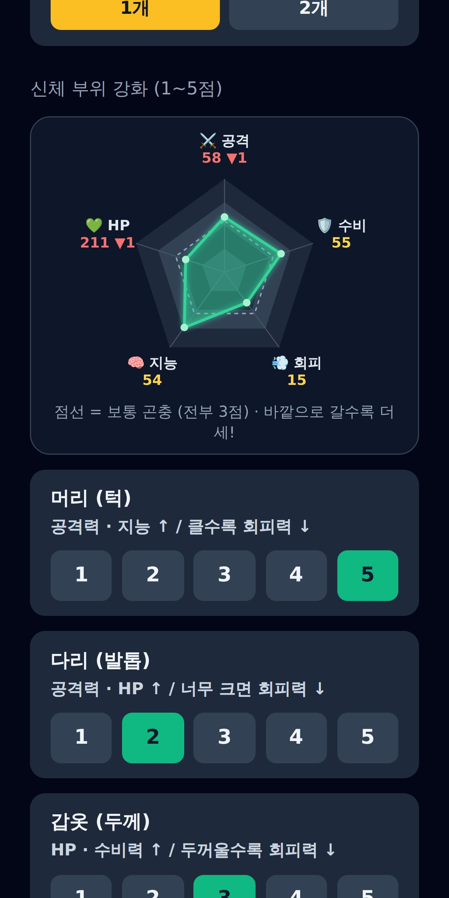
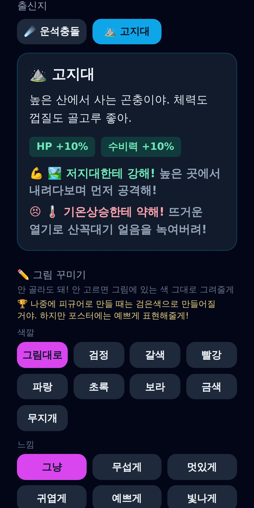
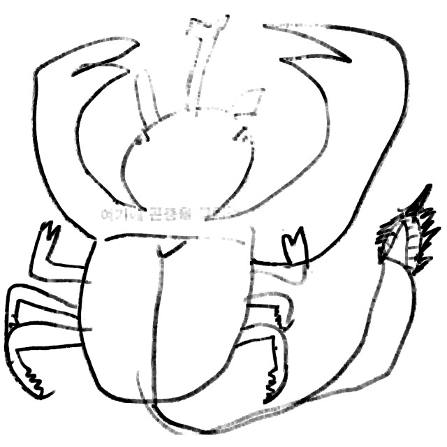
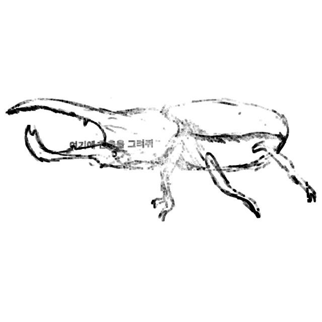
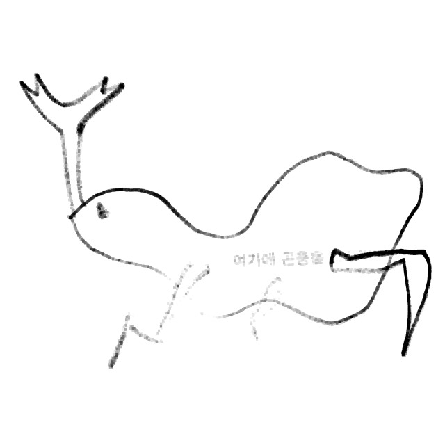
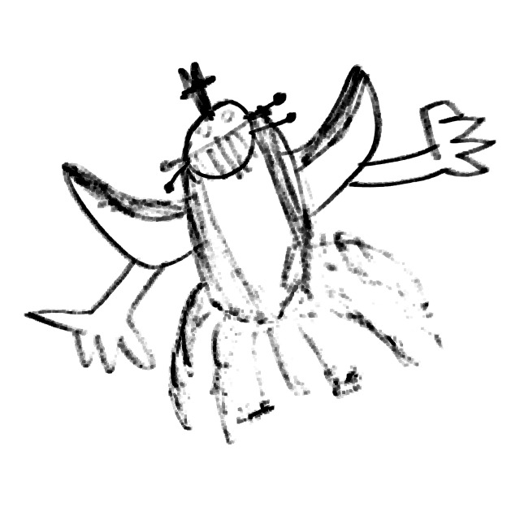
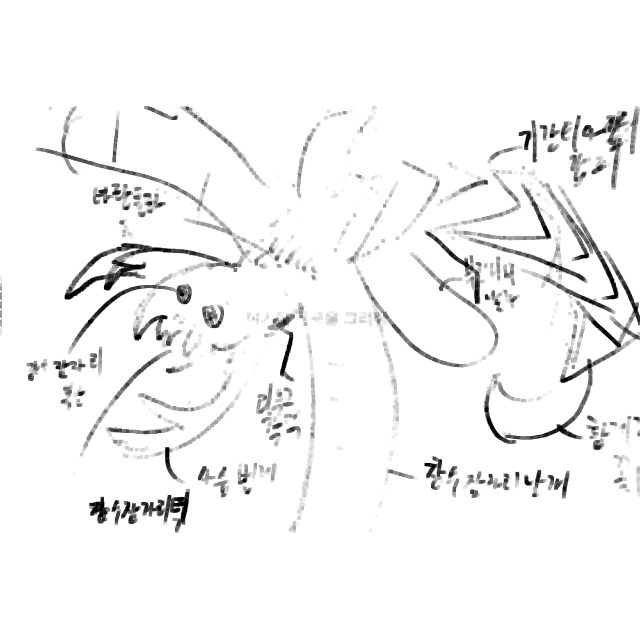
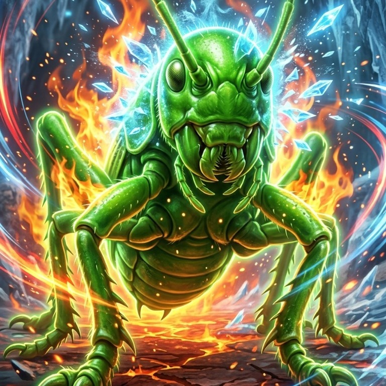
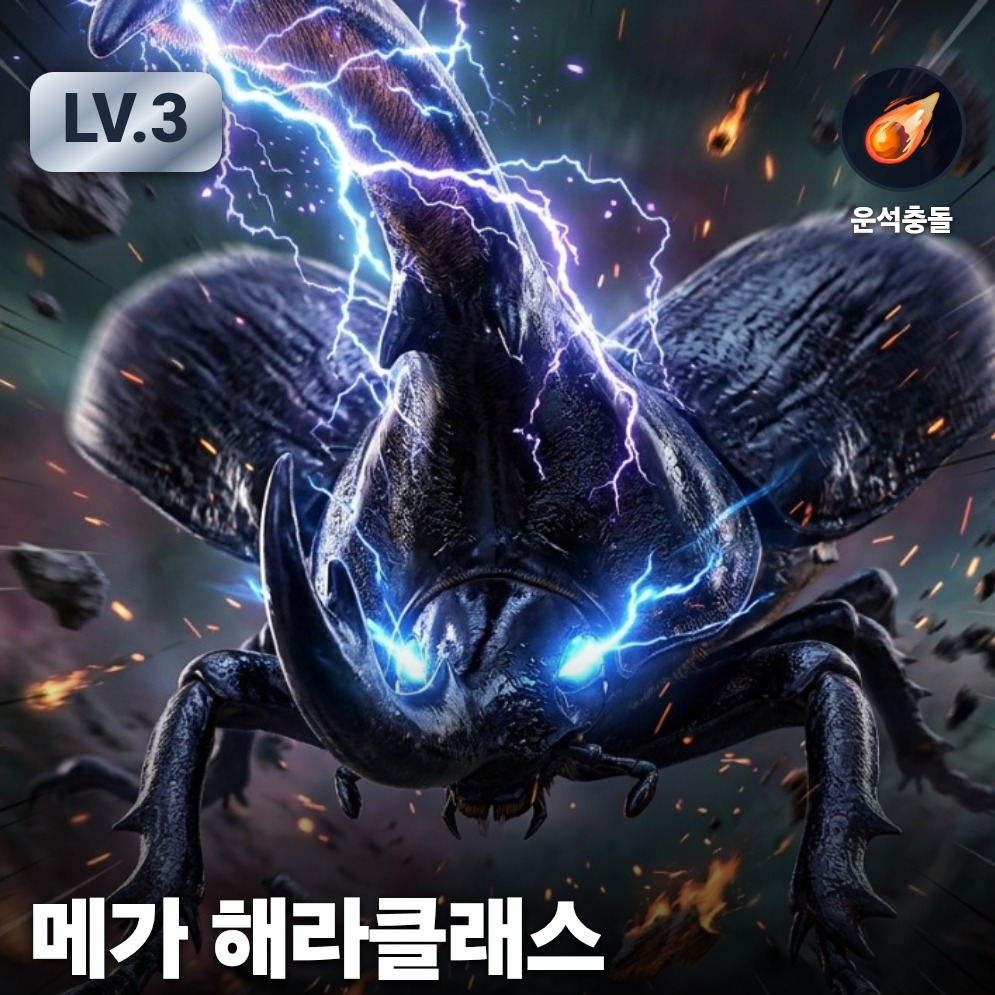
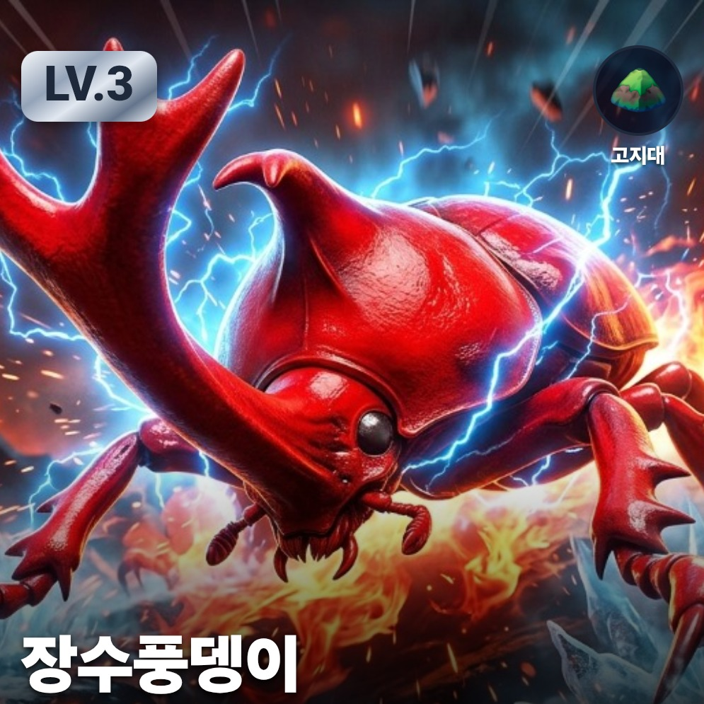
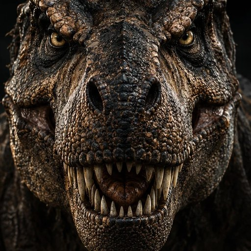
몸집·이빨·사는 시대를 골라 보며 생존과 멸종을 생각해요
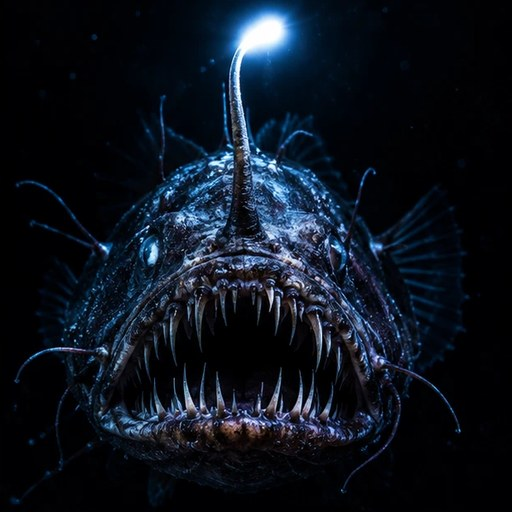
지느러미·몸 모양과 물의 깊이·온도로 물속 적응을 배워요
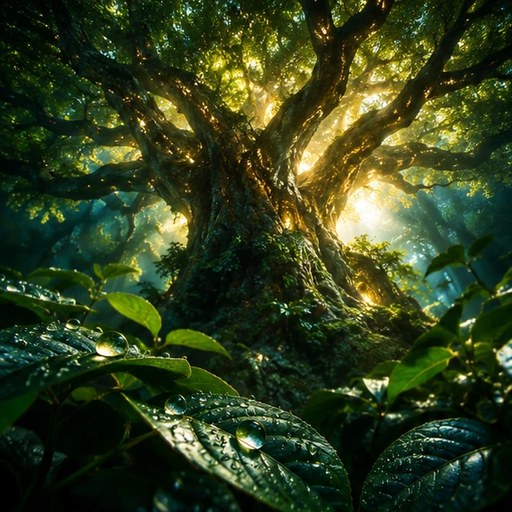
잎·뿌리와 햇빛·물·흙 조건으로 식물의 생존 전략을 배워요